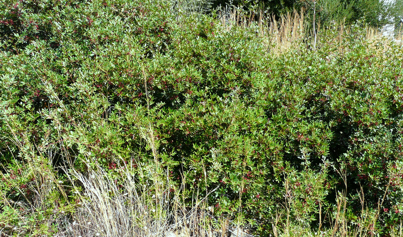
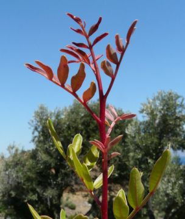
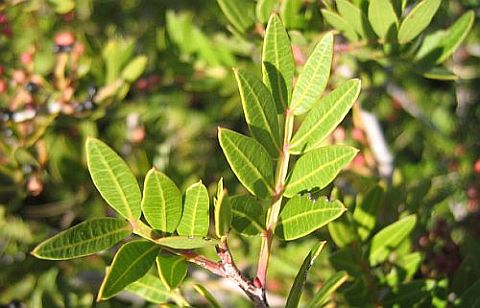
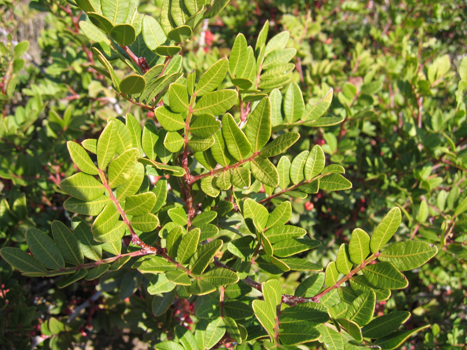
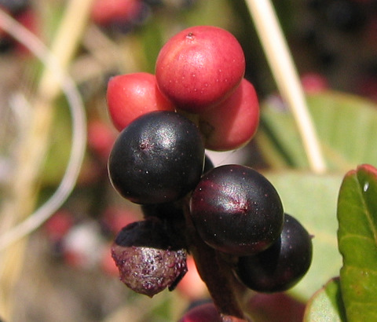
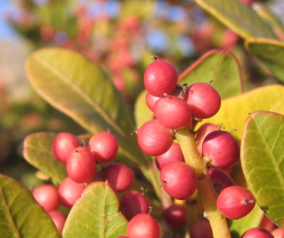
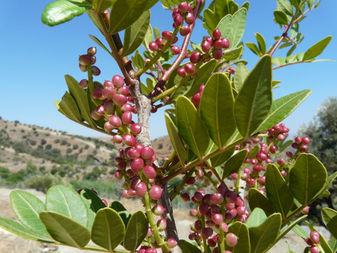
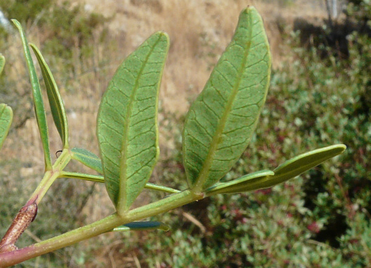

")
")
")
| PHRYGANA | Fauna | Flora | Galles | liste des espèces |
contact -
info - commentaires phrygana1 (at) gmail.com |
| Particularités crétoises | nouveautés | Mines | ressources naturelles |
| Pistacia lentiscus L. |
| 15 | Flora | ANACARDIACEAE | Pistacia |
 Pistacia lentiscus Melambes (Agios Giorgos) 02 août 2009 |
| Mastic Tree -- le Pistachier lentisque | |
| Feuille: composée-paripennée, à folioles (6 - 14) entières, lancéolées et coriaces. Le pétiole est ailé. | |
| Tiges: les jeunes tiges et les jeunes feuilles ont une couleur rouge lie-de-vin et sont glabres. | |
| Fleurs: petites, en racèmes courts, les fleurs mâles avec des anthères rouge vif, les fleurs femelles étant vert jaunâtre. | |
| Fruit: une drupe ovoïde, rouge orangé devenant noire à maturité. | |
| Hauteur: 1 - 3 (-6) m | Type biologique: nanophanérophyte sempervirent cespiteux |
| Floraison: mars avril mai juin | Altitudes: 0 - 500 (- 800) m |
| Statut en Crète: indigène | |
| Biotopes en Crète: falaises côtières, garrigue, phrygana, gorges, dunes. | |
| Distribution: région Méditerranéenne | |
| Note: Pistacia lentiscus L. peut former des fourrés étendus et impénétrables. | |
| Ressource naturelle: Pistacia lentiscus L. produit une résine qui est médicinale et est utilisée pour la confection de boissons. | |
| Plante nourricière pour: | ||
| Lepidoptera: | ||
|
|
|
|
| Eutelia adulatrix | Ophiusa tirhaca | |
| ---------------------------------------------------------------------------------------------------------------------------------------------------------------- | ||
| Galles | ||
| Sternorrhyncha: | ||
|
|
||
| Aploneura lentisci | ||
|

 Pistacia lentiscus Melambes (Agios Giorgos) 09 août 2009 Pistacia lentiscus Melambes (Agios Giorgos) 25 octobre 2007 |
 Pistacia lentiscus Melambes (Agios Giorgos) 06 novembre 2005 |
  Pistacia lentiscus Melambes (Agios Giorgos) 0§ novembre 2005 Pistacia lentiscus Melambes (Agios Giorgos) 25 octobre 2007 |
 Pistacia lentiscus Melambes (Agios Giorgos) 02 août 2009 |
 Pistacia lentiscus Melambes (Agios Giorgos) 02 août 2009 |
| 15 février 2013 |
| © paul fontaine -- © Phrygana.eu 2007 -- 2013 |